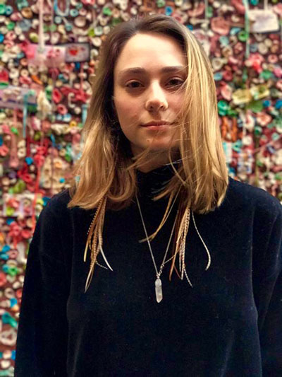

Youth Stories
How does climate change affect youth? We are interviewing youth from frontline all over the world whose lives are significantly affected by the climate crisis. Azina’s story is just one of many that we will be regularly updating.
Azaria Mendoza

How old are you?
Nineteen.
Where do live at?
I was born in Pueblo, Colorado but now I live in Seattle, Washington and that is how I met Jamie.
What is your ethnicity?
I am white and Hispanic.
How are you impacted by climate change or how do you see your community impact by climate change?
Climate change affects us all. Some more than others but regardless if your community is facing it now, we all soon will. As we’ve watched, whole islands have disappeared, famines have affected millions, and ecosystems destroyed. It’s always good to remember right now, who is most affected. However in order for the mass movement all people must find their stake and reason in this fight—it is important to realize that climate change affects all of us and that no one escapes. There is no place on the planet where you can escape to from it. So I was going to share a story about how it directly affects my hometown and how I directly see it.
In my hometown of Pueblo, Colorado. There is one of the world’s largest murals. It’s been a symbol of our town’s spirit, creativity and unity of the people living in this city, which is a predominately Hispanic town and which has been harshened by the fossil fuel industry (the largest coal powered plant is in my city). So this mural, this beautiful mural is painted on the levees that surrounds the Arkansas River that flows next to my house. As a child I would swim in this river and get really really sick and as I got older, I realized it was from all the toxins from the power plant.
I started to see the effects of climate change when I went back home a few winters ago. The mountains that you can usually see from the river are usually this beautiful, pristine white color but the last time I went and looked, there was no white on them; it was just all brown. With climate change and rising temperature and less precipitation, there was less snow. So, there was less water in the river. So, this large levee with a beautiful mural was to big. The great river that used to flow it’s now a small flow. In order for it to be sustained, the city went in and cut the mural in half vertically. This beautiful large mural, that was painted by people in the community, was just completely destroyed.
So all those years and decades of community building and unity and creativity were just gone. I mean this shows that the effects of climate change on communities goes beyond just access to food, water, and shelter but also to community spirit and life. Regardless if your community is on the front line of the effects of climate change, it will be. And given enough time, it will be felt by all, but I hope that change will come in our life.
Why is the youth march so critical?
I think it’s really critical to give, to show that people hold the power, because I think one thing that we don’t realize being youth or just being people within this world, is that we don’t hold power to change our world.
And I think this march and this ability to organize something beyond ourselves will really give people an understanding that we have the power to change this world that we exist in.
I think that’s really important to give people the perspective of that. I think it’s also valuable in terms of communicating that we want change now. That we are in the streets, we are here and we will not go anywhere until it has been realized that there is no other alternative. Thats it’s life or death at this point.
What do you think young people should do?
Honestly I think that the best way for young people to find their voices, is to first find their passion and to find others that share that passion. The thing about this work is it can be done in so many different ways because frontline activists working towards change is also just as important as the lines of support that are behind them. For, the movement, is sustained by the communities you build around it.
I would also tell the youth that it starts by just building that community and then from there, motivating that community. That community can be built in so many different ways. For instance, clearing out a room and having friends of friends play shows in that room and creating a space for music and community, or throwing a dinner party and asking people ‘what is your idea,’ or ‘how do you define liberation,’ or ‘what is your ideal world’ and ‘how do we get there?’ And perhaps most importantly, ‘what things in our community, right next to us can we change? What things need to be changed?’
Especially [being] a youth and also just a person on this world is looking at everything we are doing and asking what is the impact? What am I doing every morning, afternoon, and evening and what are the consequences of it from the breakfast I eat, to the toothpaste I use at night, to the water I use and to the companies I’m unknowingly supporting? I think they also need to realize that we hold the power to change our world if we believe it!
What should be the role of the government in achieving climate justice?
At a governmental level, it’s a tricky place for work to happen because there is so much corruption within it and so much higher corporate interests, so much influx of money, and influx of businesses that have a lot of control and say. So, I’m constantly torn back and forth between if government work is effective, but I think that it’s necessary element as well as community organizing. I think that there can be a lot of pressure put on through governmental entities by economic incentives to put pressure on these corporations that are perpetuating climate change and on governments for taking action for taking action, as well as creating plans and concrete agendas of ways to combat [climate change]. I really think that hasn’t hit home yet!
How do we get to a just world?
I think it happens in a few respects. I think one is understanding where we’ve come from and the accurate history of the world that we currently exist in, and also the transparency of what’s going on behind closed doors in our current world. Behind the closed doors of a detention center; behind the doors of the industrial agriculture; behind these locked doors that the public doesn’t have access to and really understanding what’s going on behind these locked doors.
The first step is to have transparency in education around that. I think the next step for a just world is self-sufficiency and as I mentioned before, this community building and developing that trust and being able to be self-sufficient in terms of if you want to create a world, you have to have the ability to sustain yourself in it. Like, a lot of the problems that we are currently combating in this current, unjust world we live in we have to put up with in order to survive.
We have to put up with the food industry because they are providing cheap food for us. We have to put up with the inhumane conditions of workers, animals, and the mistreatment of the land; but say if you were able to be self-sufficient in the way that you grew food, and the community around you was able to nurse itself, then you wouldn’t have to rely on these other entities that are exploiting the world and the people/animals that live in it.
In regards to March and what message you want to send to the world…
In terms of the march, I think that there should be a lot of solidarity with the Our Children’s Trust Court Case. That’s a really important message. I think the main part of the march is also that it needs to be known that this isn’t just ‘go out for a day and then go home.’ This starts a fire. This starts a continuation of more direct actions and more and more movements. It can’t just be on its own and honestly, it’s just realizing that we have the power to change our own world. And we have the power to fight this. And change will come in our lifetime. We have to start somewhere.